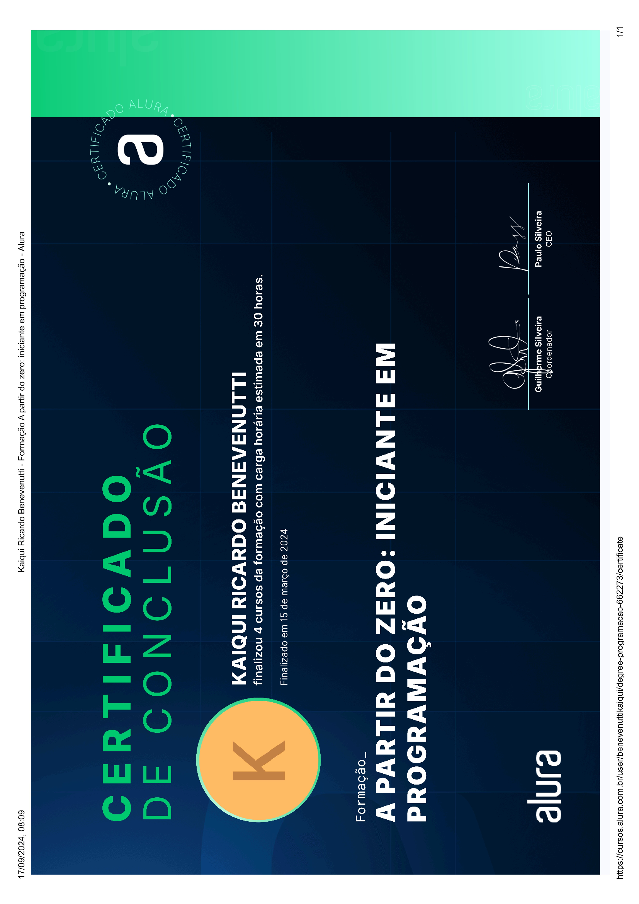
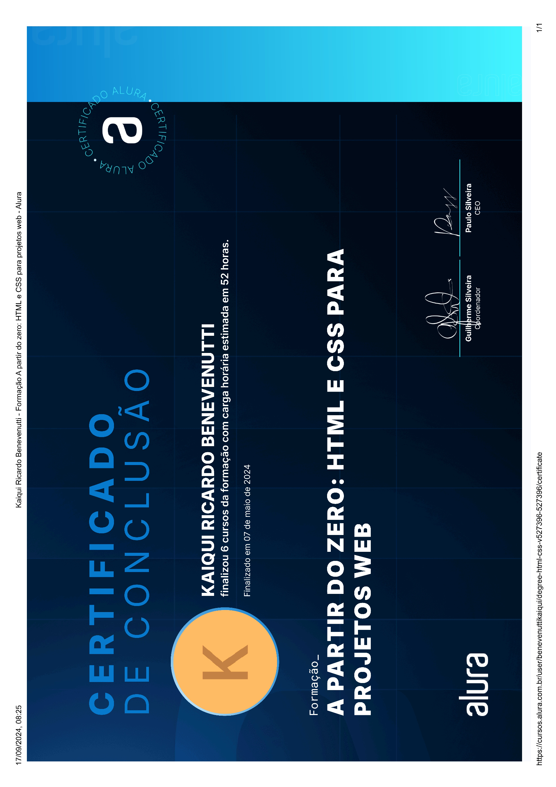
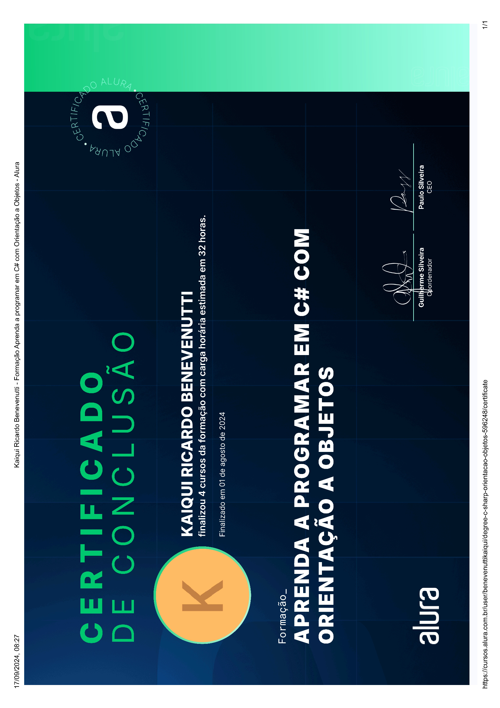
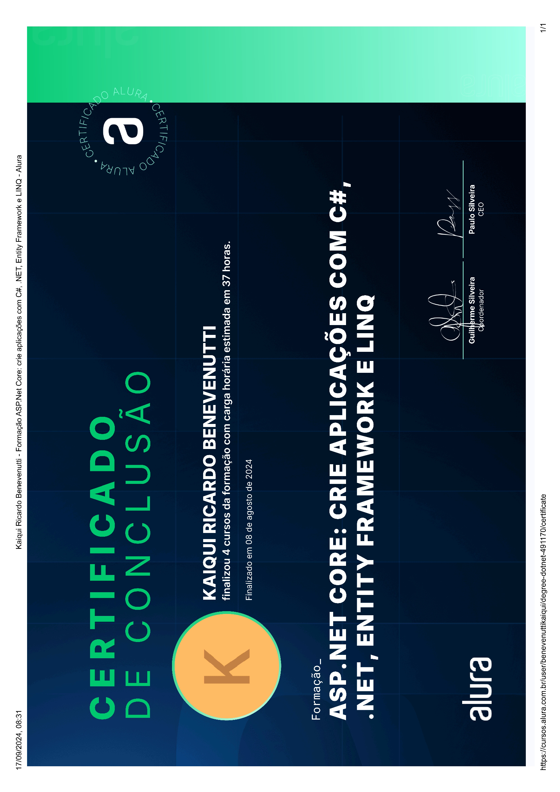

Kaiqui Ricardo Benevenutti
- Nome: Kaiqui Ricardo Benevenutti
- Data de nascimento: 30/05/2006, 19 anos
- Telefone: +55 (47) 99141-7381
- Email: benevenuttikaiqui@gmail.com
FORMAÇÃO ACADÊMICA
- Ensino Médio Completo - E.E.B. Honório Miranda - Início 02/21 - Conclusão: 12/23
-
Curso de ADS - Análise e Desenvolvimento de Sistemas - Início 09/24 - em andamento
IFSC - Instituto Federal de Santa Catarina - Presencial
Conteúdo:
Introdução à Programação, Introdução à Engenharia de Software,Arquitetura e Organização de Computadores, Programação Estruturada, Engenharia de Software I, Banco de Dados I, Programação Orientada a Objetos, Banco de Dados II, Engenharia de Software II, Desenvolvimento para Dispositivos Móveis, Algoritmos e Estruturas de Dados, Gerência de Projetos, Qualidade e Teste de Software, Programação Concorrente e Distribuída, Segurança da Informação, Sistemas Operacionais.
EXPERIÊNCIA PROFISSIONAL
-
Ricardo Hipnoterapeuta
Cargo: Auxiliar Administrativo
Período 06/2022 - Até o momento
Principal atividades: Administro documentos pessoais e profissionais do Ricardo, organizo e armazenogravações de áudio e vídeo do consultório, além de auxiliar na gestão de campanhas publicitárias no Google Ads e plataformas Meta (Facebook e Instagram), garantindo eficiência e alcance nas divulgações. -
NBW Digital
Cargo: Desenvolvedor Junior
Período 07/2024 - 03/2025
Principal atividades: Desenvolvimento de aplicativos e sites com foco em C# e Flutter, utilizando tecnologias como Blazor, Entity Frameworke bancos de dados SQL Server e MySQL. Utilização de JavaScript e React, além de frameworks como Bootstrap. Ferramentas como Visual Studio, Visual Studio Code, Rider, DataGrip, GitKraken e GitHub para otimizar o desenvolvimento e o versionamento de projetos.
CURSOS E APRIMORAMENTOS
-
A partir do zero: iniciante em programação - Conclusão: 03/24
Alura - Online
Conteúdo: Lógica de programação: mergulhe em programação comJavaScript, Lógica de programação: explore funções e listas, Git e GitHub: compartilhando e colaborando em projetos, Lógica de programação: praticando com desafios -
A partir do zero: HTML e CSS para projetos web - Conclusão: 05/24
Alura - Online
Conteúdo: HTML e CSS: ambientes de desenvolvimento, estruturade arquivos e tags, HTML e CSS: Classes, posicionamento e Flexbox, HTML e CSS: cabeçalho, footer e variáveis CSS, HTML e CSS: trabalhando com responsividade e publicação de projetos, HTML e CSS: praticando HTML/CSS, HTML e CSS: responsividade com mobile-first -
Aprenda a programar em C# com Orientação a Objetos - Conclusão: 08/24
Alura - Online
Conteúdo: C#: criando sua primeira aplicação,C#: aplicando a Orientação a Objetos, C#: dominando Orientação a Objetos, C#: consumindo API, gravando arquivos e utilizando o LINQ -
ASP.Net Core: crie aplicações com C#, .NET, Entity Framework e LINQ - Conclusão: 08/24
Alura - Online
Conteúdo: HTTP: entendendo a web por baixo dos panos,.NET 6: criando uma web API, .NET 6: relacionando entidades, .NET 6 e Identity: implementando controle de usuário -
Aprenda a programar em Java com Orientação a Objetos - Conclusão: 03/25
Alura - Online
Conteúdo: Java: criando a sua primeira aplicação,Java: aplicando a Orientação a Objetos, Java: trabalhando com listas e coleções de dados, Java: consumindo API, gravando arquivos e lidando com erros
CERTIFICADOS
-
A partir do zero: iniciante em programação
Escola Alura - Online
 -
A partir do zero: HTML e CSS para projetos web
Escola Alura - Online
 -
Aprenda a programar em C# com Orientação a Objetos
Escola Alura - Online
 -
ASP.Net Core: crie aplicações com C#, .NET, Entity Framework e LINQ
Escola Alura - Online
 -
Aprenda a programar em Java com Orientação a Objetos
Escola Alura - Online